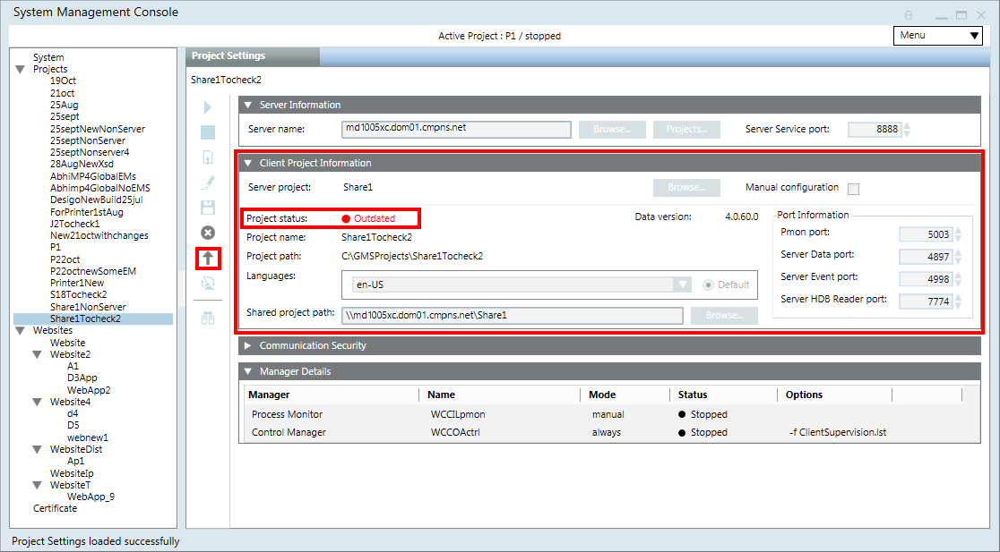

Upgrade a Client/FEP Project
In Version 4.0 only project upgrade for the project backup of Version 3.0. When you upgrade the software for the setup type client or FEP from Version 3.0 to Version 4.0, in SMC the already existing Version 3.0 projects display the Project status as Outdated (in red).
Note that project restore using the toolbar icon is not supported in SMC for Client/FEP!
- You have upgraded the software for Setup Type: Client/FEP from Version 3.0 to Version 4.0.
- You have launched SMC on Client/FEP stations.
- In the SMC tree, select Projects > [project] that you want to upgrade.
- In the Client Project Information expander of the Project Settings tab, the Project status displays as
Outdated(in red) and the toolbar icon Upgrade is enabled for those projects whose project data version is earlier than the current Desigo CC setup data version.
is enabled for those projects whose project data version is earlier than the current Desigo CC setup data version. - Click Upgrade .
- A confirmation message displays.
- Click OK.
- If the Pmon port number (default 4999) of the Client/FEP project you are about to upgrade, is already in use, a message displays.
- Click OK.
- Click Edit
 that enables the Pmon port field.
that enables the Pmon port field. - Edit the Pmon port number according to the given range, ensuring that it is not same as that of another started Client/FEP project.
- Click Upgrade again.
- The selected project is upgraded to the current data version. The Project status on upgrade displays as
Stopped.
NOTE: If you have changed the Server project parameters, you must realign the Client/FEP project with the linked Server project. Otherwise, the Client/FEP - Server project communication does not work.
Next, you can activate and then start the Client/FEP project.
